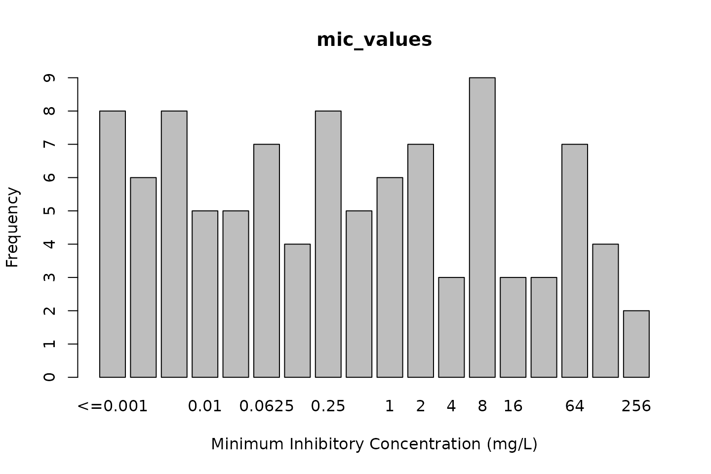
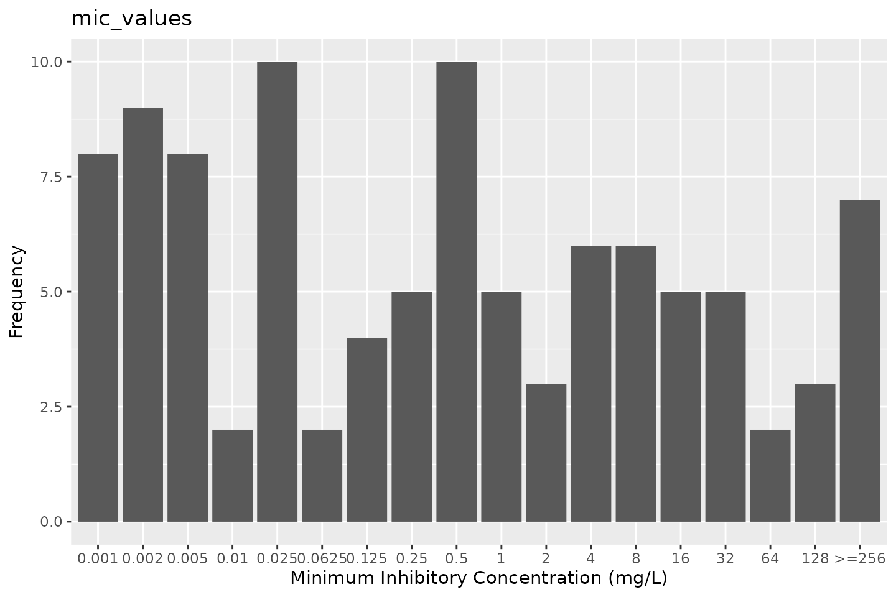
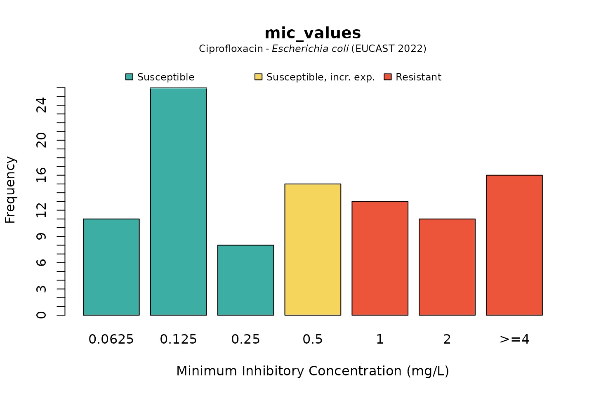
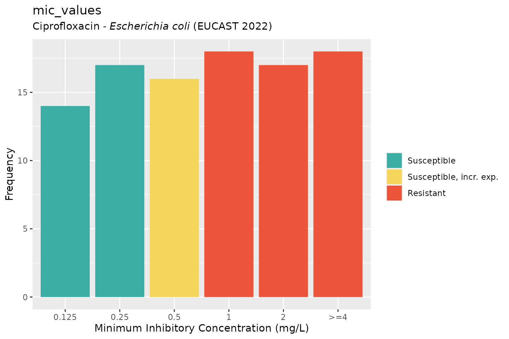
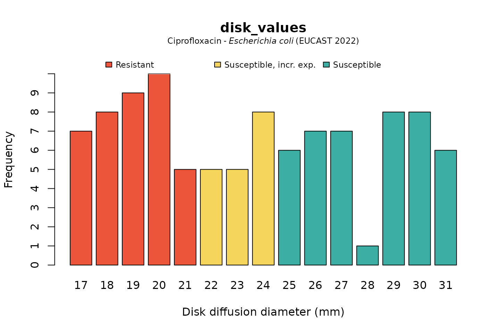
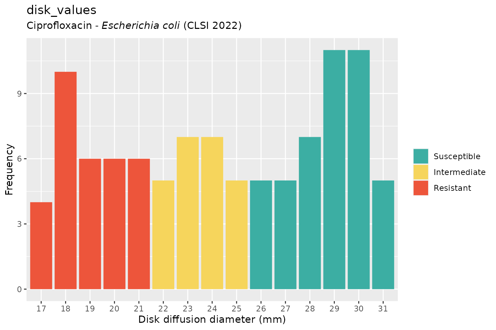

How to conduct AMR data analysis
Dr. Matthijs Berends
29 October 2022
Source:vignettes/AMR.Rmd
AMR.RmdNote: values on this page will change with every website update since they are based on randomly created values and the page was written in R Markdown. However, the methodology remains unchanged. This page was generated on 29 October 2022.
Introduction
Conducting AMR data analysis unfortunately requires in-depth knowledge from different scientific fields, which makes it hard to do right. At least, it requires:
- Good questions (always start with those!)
- A thorough understanding of (clinical) epidemiology, to understand the clinical and epidemiological relevance and possible bias of results
- A thorough understanding of (clinical) microbiology/infectious diseases, to understand which microorganisms are causal to which infections and the implications of pharmaceutical treatment, as well as understanding intrinsic and acquired microbial resistance
- Experience with data analysis with microbiological tests and their results, to understand the determination and limitations of MIC values and their interpretations to RSI values
- Availability of the biological taxonomy of microorganisms and probably normalisation factors for pharmaceuticals, such as defined daily doses (DDD)
- Available (inter-)national guidelines, and profound methods to apply them
Of course, we cannot instantly provide you with knowledge and
experience. But with this AMR package, we aimed at
providing (1) tools to simplify antimicrobial resistance data cleaning,
transformation and analysis, (2) methods to easily incorporate
international guidelines and (3) scientifically reliable reference data,
including the requirements mentioned above.
The AMR package enables standardised and reproducible
AMR data analysis, with the application of evidence-based rules,
determination of first isolates, translation of various codes for
microorganisms and antimicrobial agents, determination of (multi-drug)
resistant microorganisms, and calculation of antimicrobial resistance,
prevalence and future trends.
Preparation
For this tutorial, we will create fake demonstration data to work with.
You can skip to Cleaning the data if you already have your own data ready. If you start your analysis, try to make the structure of your data generally look like this:
| date | patient_id | mo | AMX | CIP |
|---|---|---|---|---|
| 2022-10-29 | abcd | Escherichia coli | S | S |
| 2022-10-29 | abcd | Escherichia coli | S | R |
| 2022-10-29 | efgh | Escherichia coli | R | S |
Needed R packages
As with many uses in R, we need some additional packages for AMR data
analysis. Our package works closely together with the tidyverse packages dplyr and ggplot2 by
RStudio. The tidyverse tremendously improves the way we conduct data
science - it allows for a very natural way of writing syntaxes and
creating beautiful plots in R.
We will also use the cleaner package, that can be used
for cleaning data and creating frequency tables.
Creation of data
We will create some fake example data to use for analysis. For AMR data analysis, we need at least: a patient ID, name or code of a microorganism, a date and antimicrobial results (an antibiogram). It could also include a specimen type (e.g. to filter on blood or urine), the ward type (e.g. to filter on ICUs).
With additional columns (like a hospital name, the patients gender of even [well-defined] clinical properties) you can do a comparative analysis, as this tutorial will demonstrate too.
Patients
To start with patients, we need a unique list of patients.
The LETTERS object is available in R - it’s a vector
with 26 characters: A to Z. The
patients object we just created is now a vector of length
260, with values (patient IDs) varying from A1 to
Z10. Now we we also set the gender of our patients, by
putting the ID and the gender in a table:
patients_table <- data.frame(
patient_id = patients,
gender = c(
rep("M", 135),
rep("F", 125)
)
)The first 135 patient IDs are now male, the other 125 are female.
Dates
Let’s pretend that our data consists of blood cultures isolates from between 1 January 2010 and 1 January 2018.
This dates object now contains all days in our date
range.
Microorganisms
For this tutorial, we will uses four different microorganisms: Escherichia coli, Staphylococcus aureus, Streptococcus pneumoniae, and Klebsiella pneumoniae:
bacteria <- c(
"Escherichia coli", "Staphylococcus aureus",
"Streptococcus pneumoniae", "Klebsiella pneumoniae"
)Put everything together
Using the sample() function, we can randomly select
items from all objects we defined earlier. To let our fake data reflect
reality a bit, we will also approximately define the probabilities of
bacteria and the antibiotic results, using the random_rsi()
function.
sample_size <- 20000
data <- data.frame(
date = sample(dates, size = sample_size, replace = TRUE),
patient_id = sample(patients, size = sample_size, replace = TRUE),
hospital = sample(c(
"Hospital A",
"Hospital B",
"Hospital C",
"Hospital D"
),
size = sample_size, replace = TRUE,
prob = c(0.30, 0.35, 0.15, 0.20)
),
bacteria = sample(bacteria,
size = sample_size, replace = TRUE,
prob = c(0.50, 0.25, 0.15, 0.10)
),
AMX = random_rsi(sample_size, prob_RSI = c(0.35, 0.60, 0.05)),
AMC = random_rsi(sample_size, prob_RSI = c(0.15, 0.75, 0.10)),
CIP = random_rsi(sample_size, prob_RSI = c(0.20, 0.80, 0.00)),
GEN = random_rsi(sample_size, prob_RSI = c(0.08, 0.92, 0.00))
)Using the left_join() function from the
dplyr package, we can ‘map’ the gender to the patient ID
using the patients_table object we created earlier:
The resulting data set contains 20,000 blood culture isolates. With
the head() function we can preview the first 6 rows of this
data set:
head(data)| date | patient_id | hospital | bacteria | AMX | AMC | CIP | GEN | gender |
|---|---|---|---|---|---|---|---|---|
| 2016-06-08 | H2 | Hospital B | Staphylococcus aureus | S | S | R | S | M |
| 2017-12-08 | T3 | Hospital A | Staphylococcus aureus | R | S | R | S | F |
| 2013-11-26 | C9 | Hospital B | Staphylococcus aureus | R | S | S | S | M |
| 2011-09-18 | Y5 | Hospital B | Escherichia coli | R | I | R | S | F |
| 2014-08-30 | I4 | Hospital A | Streptococcus pneumoniae | S | S | S | S | M |
| 2012-11-04 | T9 | Hospital D | Escherichia coli | S | S | S | S | F |
Now, let’s start the cleaning and the analysis!
Cleaning the data
We also created a package dedicated to data cleaning and checking,
called the cleaner package. It freq() function
can be used to create frequency tables.
For example, for the gender variable:
Frequency table
Class: character
Length: 20,000
Available: 20,000 (100%, NA: 0 = 0%)
Unique: 2
Shortest: 1
Longest: 1
| Item | Count | Percent | Cum. Count | Cum. Percent | |
|---|---|---|---|---|---|
| 1 | M | 10,377 | 51.89% | 10,377 | 51.89% |
| 2 | F | 9,623 | 48.12% | 20,000 | 100.00% |
So, we can draw at least two conclusions immediately. From a data
scientists perspective, the data looks clean: only values M
and F. From a researchers perspective: there are slightly
more men. Nothing we didn’t already know.
The data is already quite clean, but we still need to transform some
variables. The bacteria column now consists of text, and we
want to add more variables based on microbial IDs later on. So, we will
transform this column to valid IDs. The mutate() function
of the dplyr package makes this really easy:
We also want to transform the antibiotics, because in real life data
we don’t know if they are really clean. The as.rsi()
function ensures reliability and reproducibility in these kind of
variables. The is.rsi.eligible() can check which columns
are probably columns with R/SI test results. Using mutate()
and across(), we can apply the transformation to the formal
<rsi> class:
is.rsi.eligible(data)
# [1] FALSE FALSE FALSE FALSE TRUE TRUE TRUE TRUE FALSE
colnames(data)[is.rsi.eligible(data)]
# [1] "AMX" "AMC" "CIP" "GEN"
data <- data %>%
mutate(across(where(is.rsi.eligible), as.rsi))Finally, we will apply EUCAST
rules on our antimicrobial results. In Europe, most medical
microbiological laboratories already apply these rules. Our package
features their latest insights on intrinsic resistance and exceptional
phenotypes. Moreover, the eucast_rules() function can also
apply additional rules, like forcing
Because the amoxicillin (column AMX) and
amoxicillin/clavulanic acid (column AMC) in our data were
generated randomly, some rows will undoubtedly contain AMX = S and AMC =
R, which is technically impossible. The eucast_rules()
fixes this:
data <- eucast_rules(data, col_mo = "bacteria", rules = "all")Adding new variables
Now that we have the microbial ID, we can add some taxonomic properties:
data <- data %>%
mutate(
gramstain = mo_gramstain(bacteria),
genus = mo_genus(bacteria),
species = mo_species(bacteria)
)First isolates
We also need to know which isolates we can actually use for analysis.
To conduct an analysis of antimicrobial resistance, you must only include the first isolate of every patient per episode (Hindler et al., Clin Infect Dis. 2007). If you would not do this, you could easily get an overestimate or underestimate of the resistance of an antibiotic. Imagine that a patient was admitted with an MRSA and that it was found in 5 different blood cultures the following weeks (yes, some countries like the Netherlands have these blood drawing policies). The resistance percentage of oxacillin of all isolates would be overestimated, because you included this MRSA more than once. It would clearly be selection bias.
The Clinical and Laboratory Standards Institute (CLSI) appoints this as follows:
(…) When preparing a cumulative antibiogram to guide clinical decisions about empirical antimicrobial therapy of initial infections, only the first isolate of a given species per patient, per analysis period (eg, one year) should be included, irrespective of body site, antimicrobial susceptibility profile, or other phenotypical characteristics (eg, biotype). The first isolate is easily identified, and cumulative antimicrobial susceptibility test data prepared using the first isolate are generally comparable to cumulative antimicrobial susceptibility test data calculated by other methods, providing duplicate isolates are excluded.
M39-A4 Analysis and Presentation of Cumulative Antimicrobial Susceptibility Test Data, 4th Edition. CLSI, 2014. Chapter 6.4
This AMR package includes this methodology with the
first_isolate() function and is able to apply the four
different methods as defined by Hindler
et al. in 2007: phenotype-based, episode-based,
patient-based, isolate-based. The right method depends on your goals and
analysis, but the default phenotype-based method is in any case the
method to properly correct for most duplicate isolates. This method also
takes into account the antimicrobial susceptibility test results using
all_microbials(). Read more about the methods on the
first_isolate() page.
The outcome of the function can easily be added to our data:
data <- data %>%
mutate(first = first_isolate(info = TRUE))
# Determining first isolates using an episode length of 365 days
# ℹ Using column 'bacteria' as input for `col_mo`.
# ℹ Using column 'date' as input for `col_date`.
# ℹ Using column 'patient_id' as input for `col_patient_id`.
# Basing inclusion on all antimicrobial results, using a points threshold of
# 2
# Including isolates from ICU.
# => Found 10,687 'phenotype-based' first isolates (53.4% of total where a
# microbial ID was available)So only 53.4% is suitable for resistance analysis! We can now filter
on it with the filter() function, also from the
dplyr package:
For future use, the above two syntaxes can be shortened:
data_1st <- data %>%
filter_first_isolate()
# Including isolates from ICU.So we end up with 10,687 isolates for analysis. Now our data looks like:
head(data_1st)| date | patient_id | hospital | bacteria | AMX | AMC | CIP | GEN | gender | gramstain | genus | species | first | |
|---|---|---|---|---|---|---|---|---|---|---|---|---|---|
| 1 | 2016-06-08 | H2 | Hospital B | B_STPHY_AURS | S | S | R | S | M | Gram-positive | Staphylococcus | aureus | TRUE |
| 2 | 2017-12-08 | T3 | Hospital A | B_STPHY_AURS | R | S | R | S | F | Gram-positive | Staphylococcus | aureus | TRUE |
| 3 | 2013-11-26 | C9 | Hospital B | B_STPHY_AURS | R | S | S | S | M | Gram-positive | Staphylococcus | aureus | TRUE |
| 6 | 2012-11-04 | T9 | Hospital D | B_ESCHR_COLI | S | S | S | S | F | Gram-negative | Escherichia | coli | TRUE |
| 8 | 2011-09-02 | U9 | Hospital D | B_STPHY_AURS | R | S | R | S | F | Gram-positive | Staphylococcus | aureus | TRUE |
| 10 | 2015-12-26 | Q6 | Hospital D | B_STPHY_AURS | R | S | R | S | F | Gram-positive | Staphylococcus | aureus | TRUE |
Time for the analysis!
Analysing the data
You might want to start by getting an idea of how the data is
distributed. It’s an important start, because it also decides how you
will continue your analysis. Although this package contains a convenient
function to make frequency tables, exploratory data analysis (EDA) is
not the primary scope of this package. Use a package like DataExplorer
for that, or read the free online book Exploratory Data Analysis
with R by Roger D. Peng.
Dispersion of species
To just get an idea how the species are distributed, create a
frequency table with our freq() function. We created the
genus and species column earlier based on the
microbial ID. With paste(), we can concatenate them
together.
The freq() function can be used like the base R language
was intended:
Or can be used like the dplyr way, which is easier
readable:
Frequency table
Class: character
Length: 10,687
Available: 10,687 (100%, NA: 0 = 0%)
Unique: 4
Shortest: 16
Longest: 24
| Item | Count | Percent | Cum. Count | Cum. Percent | |
|---|---|---|---|---|---|
| 1 | Escherichia coli | 4,686 | 43.85% | 4,686 | 43.85% |
| 2 | Staphylococcus aureus | 2,764 | 25.86% | 7,450 | 69.71% |
| 3 | Streptococcus pneumoniae | 2,087 | 19.53% | 9,537 | 89.24% |
| 4 | Klebsiella pneumoniae | 1,150 | 10.76% | 10,687 | 100.00% |
Overview of different bug/drug combinations
Using tidyverse selections, you can also select or filter columns based on the antibiotic class they are in:
data_1st %>%
filter(any(aminoglycosides() == "R"))# ℹ For `aminoglycosides()` using column 'GEN' (gentamicin)| date | patient_id | hospital | bacteria | AMX | AMC | CIP | GEN | gender | gramstain | genus | species | first |
|---|---|---|---|---|---|---|---|---|---|---|---|---|
| 2017-01-02 | H1 | Hospital A | B_STRPT_PNMN | S | S | S | R | M | Gram-positive | Streptococcus | pneumoniae | TRUE |
| 2014-06-28 | F2 | Hospital B | B_STRPT_PNMN | S | S | S | R | M | Gram-positive | Streptococcus | pneumoniae | TRUE |
| 2013-11-15 | R3 | Hospital B | B_STRPT_PNMN | R | R | S | R | F | Gram-positive | Streptococcus | pneumoniae | TRUE |
| 2016-09-25 | A7 | Hospital A | B_ESCHR_COLI | S | S | S | R | M | Gram-negative | Escherichia | coli | TRUE |
| 2017-08-10 | D9 | Hospital A | B_STRPT_PNMN | R | R | S | R | M | Gram-positive | Streptococcus | pneumoniae | TRUE |
| 2010-12-30 | J6 | Hospital C | B_STPHY_AURS | R | S | R | R | M | Gram-positive | Staphylococcus | aureus | TRUE |
If you want to get a quick glance of the number of isolates in
different bug/drug combinations, you can use the
bug_drug_combinations() function:
data_1st %>%
bug_drug_combinations() %>%
head() # show first 6 rows# ℹ Using column 'bacteria' as input for `col_mo`.| mo | ab | S | I | R | total |
|---|---|---|---|---|---|
| E. coli | AMX | 2208 | 140 | 2338 | 4686 |
| E. coli | AMC | 3438 | 171 | 1077 | 4686 |
| E. coli | CIP | 3403 | 0 | 1283 | 4686 |
| E. coli | GEN | 4139 | 0 | 547 | 4686 |
| K. pneumoniae | AMX | 0 | 0 | 1150 | 1150 |
| K. pneumoniae | AMC | 902 | 50 | 198 | 1150 |
data_1st %>%
select(bacteria, aminoglycosides()) %>%
bug_drug_combinations()# ℹ For `aminoglycosides()` using column 'GEN' (gentamicin)
# ℹ Using column 'bacteria' as input for `col_mo`.| mo | ab | S | I | R | total |
|---|---|---|---|---|---|
| E. coli | GEN | 4139 | 0 | 547 | 4686 |
| K. pneumoniae | GEN | 1039 | 0 | 111 | 1150 |
| S. aureus | GEN | 2463 | 0 | 301 | 2764 |
| S. pneumoniae | GEN | 0 | 0 | 2087 | 2087 |
This will only give you the crude numbers in the data. To calculate
antimicrobial resistance in a more sensible way, also by correcting for
too few results, we use the resistance() and
susceptibility() functions.
Resistance percentages
The functions resistance() and
susceptibility() can be used to calculate antimicrobial
resistance or susceptibility. For more specific analyses, the functions
proportion_S(), proportion_SI(),
proportion_I(), proportion_IR() and
proportion_R() can be used to determine the proportion of a
specific antimicrobial outcome.
All these functions contain a minimum argument, denoting
the minimum required number of test results for returning a value. These
functions will otherwise return NA. The default is
minimum = 30, following the CLSI
M39-A4 guideline for applying microbial epidemiology.
As per the EUCAST guideline of 2019, we calculate resistance as the
proportion of R (proportion_R(), equal to
resistance()) and susceptibility as the proportion of S and
I (proportion_SI(), equal to
susceptibility()). These functions can be used on their
own:
data_1st %>% resistance(AMX)
# [1] 0.5448676Or can be used in conjunction with group_by() and
summarise(), both from the dplyr package:
data_1st %>%
group_by(hospital) %>%
summarise(amoxicillin = resistance(AMX))| hospital | amoxicillin |
|---|---|
| Hospital A | 0.5442717 |
| Hospital B | 0.5377861 |
| Hospital C | 0.5453991 |
| Hospital D | 0.5577913 |
Of course it would be very convenient to know the number of isolates
responsible for the percentages. For that purpose the
n_rsi() can be used, which works exactly like
n_distinct() from the dplyr package. It counts
all isolates available for every group (i.e. values S, I or R):
data_1st %>%
group_by(hospital) %>%
summarise(
amoxicillin = resistance(AMX),
available = n_rsi(AMX)
)| hospital | amoxicillin | available |
|---|---|---|
| Hospital A | 0.5442717 | 3151 |
| Hospital B | 0.5377861 | 3758 |
| Hospital C | 0.5453991 | 1641 |
| Hospital D | 0.5577913 | 2137 |
These functions can also be used to get the proportion of multiple antibiotics, to calculate empiric susceptibility of combination therapies very easily:
data_1st %>%
group_by(genus) %>%
summarise(
amoxiclav = susceptibility(AMC),
gentamicin = susceptibility(GEN),
amoxiclav_genta = susceptibility(AMC, GEN)
)| genus | amoxiclav | gentamicin | amoxiclav_genta |
|---|---|---|---|
| Escherichia | 0.7701665 | 0.8832693 | 0.9812207 |
| Klebsiella | 0.8278261 | 0.9034783 | 0.9860870 |
| Staphylococcus | 0.7948625 | 0.8910999 | 0.9851664 |
| Streptococcus | 0.5304264 | 0.0000000 | 0.5304264 |
Or if you are curious for the resistance within certain antibiotic
classes, use a antibiotic class selector such as
penicillins(), which automatically will include the columns
AMX and AMC of our data:
data_1st %>%
# group by hospital
group_by(hospital) %>%
# / -> select all penicillins in the data for calculation
# | / -> use resistance() for all peni's per hospital
# | | / -> print as percentages
summarise(across(penicillins(), resistance, as_percent = TRUE)) %>%
# format the antibiotic column names, using so-called snake case,
# so 'Amoxicillin/clavulanic acid' becomes 'amoxicillin_clavulanic_acid'
rename_with(set_ab_names, penicillins())| hospital | amoxicillin | amoxicillin_clavulanic_acid |
|---|---|---|
| Hospital A | 54.4% | 25.9% |
| Hospital B | 53.8% | 26.2% |
| Hospital C | 54.5% | 27.5% |
| Hospital D | 55.8% | 26.6% |
To make a transition to the next part, let’s see how differences in the previously calculated combination therapies could be plotted:
data_1st %>%
group_by(genus) %>%
summarise(
"1. Amoxi/clav" = susceptibility(AMC),
"2. Gentamicin" = susceptibility(GEN),
"3. Amoxi/clav + genta" = susceptibility(AMC, GEN)
) %>%
# pivot_longer() from the tidyr package "lengthens" data:
tidyr::pivot_longer(-genus, names_to = "antibiotic") %>%
ggplot(aes(
x = genus,
y = value,
fill = antibiotic
)) +
geom_col(position = "dodge2")
Plots
To show results in plots, most R users would nowadays use the
ggplot2 package. This package lets you create plots in
layers. You can read more about it on their website. A quick
example would look like these syntaxes:
ggplot(
data = a_data_set,
mapping = aes(
x = year,
y = value
)
) +
geom_col() +
labs(
title = "A title",
subtitle = "A subtitle",
x = "My X axis",
y = "My Y axis"
)
# or as short as:
ggplot(a_data_set) +
geom_bar(aes(year))The AMR package contains functions to extend this
ggplot2 package, for example geom_rsi(). It
automatically transforms data with count_df() or
proportion_df() and show results in stacked bars. Its
simplest and shortest example:

Omit the translate_ab = FALSE to have the antibiotic
codes (AMX, AMC, CIP, GEN) translated to official WHO names
(amoxicillin, amoxicillin/clavulanic acid, ciprofloxacin,
gentamicin).
If we group on e.g. the genus column and add some
additional functions from our package, we can create this:
# group the data on `genus`
ggplot(data_1st %>% group_by(genus)) +
# create bars with genus on x axis
# it looks for variables with class `rsi`,
# of which we have 4 (earlier created with `as.rsi`)
geom_rsi(x = "genus") +
# split plots on antibiotic
facet_rsi(facet = "antibiotic") +
# set colours to the R/SI interpretations (colour-blind friendly)
scale_rsi_colours() +
# show percentages on y axis
scale_y_percent(breaks = 0:4 * 25) +
# turn 90 degrees, to make it bars instead of columns
coord_flip() +
# add labels
labs(
title = "Resistance per genus and antibiotic",
subtitle = "(this is fake data)"
) +
# and print genus in italic to follow our convention
# (is now y axis because we turned the plot)
theme(axis.text.y = element_text(face = "italic"))
To simplify this, we also created the ggplot_rsi()
function, which combines almost all above functions:
data_1st %>%
group_by(genus) %>%
ggplot_rsi(
x = "genus",
facet = "antibiotic",
breaks = 0:4 * 25,
datalabels = FALSE
) +
coord_flip()
Plotting MIC and disk diffusion values
The AMR package also extends the plot() and
ggplot2::autoplot() functions for plotting minimum
inhibitory concentrations (MIC, created with as.mic()) and
disk diffusion diameters (created with as.disk()).
With the random_mic() and random_disk()
functions, we can generate sampled values for the new data types (S3
classes) <mic> and <disk>:
mic_values <- random_mic(size = 100)
mic_values
# Class 'mic'
# [1] 128 8 0.5 0.01 4 0.025 0.002 256 <=0.001
# [10] 0.002 2 4 0.5 32 0.025 0.002 0.5 16
# [19] 0.005 0.025 2 4 4 16 256 4 2
# [28] 0.002 2 256 0.025 0.01 0.01 0.01 0.125 <=0.001
# [37] <=0.001 128 32 0.25 2 0.125 32 32 0.002
# [46] 0.002 128 0.002 4 64 0.005 1 8 0.01
# [55] <=0.001 0.005 0.005 0.25 0.5 0.0625 0.25 0.0625 0.0625
# [64] 0.01 0.002 256 0.5 0.25 0.0625 0.025 0.005 16
# [73] 32 0.0625 256 128 128 128 2 256 4
# [82] 2 0.005 16 0.005 64 1 0.5 8 0.025
# [91] 0.005 0.5 64 0.0625 0.025 0.01 32 128 0.002
# [100] 128
# base R:
plot(mic_values)
# ggplot2:
autoplot(mic_values)
But we could also be more specific, by generating MICs that are likely to be found in E. coli for ciprofloxacin:
mic_values <- random_mic(size = 100, mo = "E. coli", ab = "cipro")For the plot() and autoplot() function, we
can define the microorganism and an antimicrobial agent the same way.
This will add the interpretation of those values according to a chosen
guidelines (defaults to the latest EUCAST guideline).
Default colours are colour-blind friendly, while maintaining the convention that e.g. ‘susceptible’ should be green and ‘resistant’ should be red:
# base R:
plot(mic_values, mo = "E. coli", ab = "cipro")
# ggplot2:
autoplot(mic_values, mo = "E. coli", ab = "cipro")
For disk diffusion values, there is not much of a difference in plotting:
disk_values <- random_disk(size = 100, mo = "E. coli", ab = "cipro")
disk_values
# Class 'disk'
# [1] 19 31 30 19 20 26 24 22 22 19 18 20 19 23 20 28 23 28 20 20 21 22 18 17 24
# [26] 18 22 31 23 22 31 28 29 24 22 26 23 19 18 26 30 23 31 17 27 26 17 17 28 26
# [51] 17 31 23 30 31 23 17 26 17 23 23 28 23 20 30 17 30 18 23 31 25 31 21 28 19
# [76] 23 26 29 17 23 29 25 18 25 21 25 22 31 28 24 31 28 19 23 22 17 19 25 23 30
# base R:
plot(disk_values, mo = "E. coli", ab = "cipro")
And when using the ggplot2 package, but now choosing the
latest implemented CLSI guideline (notice that the EUCAST-specific term
“Susceptible, incr. exp.” has changed to “Intermediate”):
autoplot(
disk_values,
mo = "E. coli",
ab = "cipro",
guideline = "CLSI"
)
Independence test
The next example uses the example_isolates data set.
This is a data set included with this package and contains 2,000
microbial isolates with their full antibiograms. It reflects reality and
can be used to practise AMR data analysis.
We will compare the resistance to amoxicillin/clavulanic acid (column
FOS) between an ICU and other clinical wards. The input for
the fisher.test() can be retrieved with a transformation
like this:
# use package 'tidyr' to pivot data:
library(tidyr)
check_FOS <- example_isolates %>%
filter(ward %in% c("ICU", "Clinical")) %>% # filter on only these wards
select(ward, AMC) %>% # select the wards and amoxi/clav
group_by(ward) %>% # group on the wards
count_df(combine_SI = TRUE) %>% # count all isolates per group (ward)
pivot_wider(
names_from = ward, # transform output so "ICU" and "Clinical" are columns
values_from = value
) %>%
select(ICU, Clinical) %>% # and only select these columns
as.matrix() # transform to a good old matrix for fisher.test()
check_FOS
# ICU Clinical
# [1,] 396 942
# [2,] 184 240We can apply the test now with:
# do Fisher's Exact Test
fisher.test(check_FOS)
#
# Fisher's Exact Test for Count Data
#
# data: check_FOS
# p-value = 2.263e-07
# alternative hypothesis: true odds ratio is not equal to 1
# 95 percent confidence interval:
# 0.435261 0.691614
# sample estimates:
# odds ratio
# 0.5485079As can be seen, the p value is practically zero (0.0000002263247), which means that the amoxicillin/clavulanic acid resistance found in isolates between patients in ICUs and other clinical wards are really different.